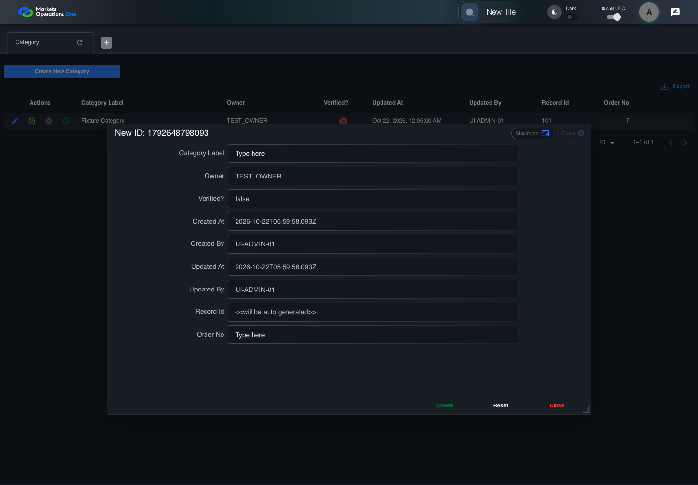
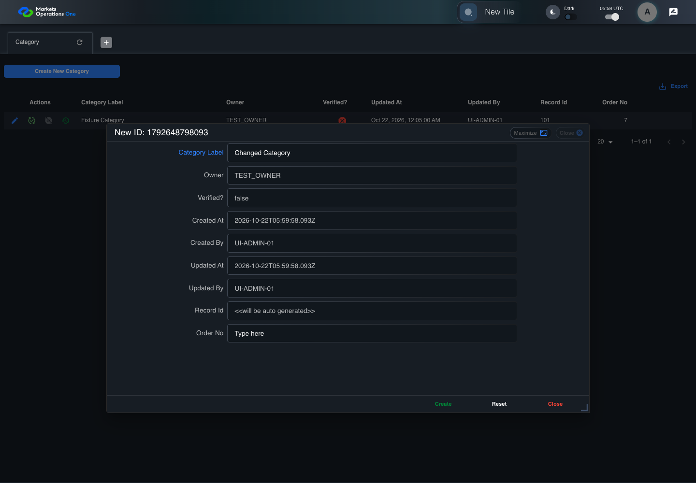

UI-ADM-CAT-003 actual administration UI with step evidence
PASS · application/run-050/ui-adm-cat-003-actual-administration-ui-with-step-evidence-8276e1f3b0aa-attempt-1 · ACTUAL_APPLICATION_LOCAL_SERVICES
Actual current React administration screens. Controlled browser login supplies UI-ADMIN-01 and TEST_OWNER, or the declared SUPER_USER. Controlled BFF routes return the case-declared records. Other controlled saves persist submitted field values. This run establishes frontend handling only. It does not execute BFF validation, storage, audit generation, or authorization.
2026-10-22T05:58:55.585Z to 2026-10-22T05:58:59.617Z
Assertions and result · Artifact manifest · Exact run inputs and source hashes
Result SHA-256:02552e953e145a9fa0b2806d72ee72c2496203c265122da00d3e34c56db18865Machine observations
- new-record-source-identity.json
a03fcd276992b3e3c1d43d989356b430eb29972a1ccda81607b6b9e05a12961e - ui-origin-admin-requests.json
b8fed1ded0ad799acfe857bb7a9001c6facd714b68f53edd43edc63a500ad219
Screenshot capture: CAPTURED. Named frames: 11.
Step screenshot evidence: COMPLETE. 10/10 canonical steps have execution screenshots.
Canonical step timeline
Given Admin A is authenticated as fixture UI-ADMIN-01 with the case-specific permissions
Execution: PASSED.1. step-01 Visible state after step 1: Given Admin A is authenticated as fixture UI-ADMIN-01 with the case-specific permissions
2026-10-22T05:58:57.253Z · 1440×1000
Step: /Users/lushevol/code/github/ratan-release-impact/workbench/tasks/ui-test-coverage-20261022/test-cases.md:7733
SHA-256:21fef8241aa6f773bcf0171251c7fc932d4db276f62151bfcd6973cc7673d181And the Category admin screen is open for UI-ADMIN-01; fixture record 101 is inactive and has Category Label Fixture Category; its owner is TEST_OWNER; the create response is a record with applicationCategoryId 102 and Category Label Changed Category
Execution: PASSED.
2. step-02 Visible state after step 2: And the Category admin screen is open for UI-ADMIN-01; fixture record 101 is inactive and has Category Label Fixture Category; its owner is TEST_OWNER; the create response is a record with applicationCategoryId 102 and Category Label Changed Category
2026-10-22T05:58:58.153Z · 1440×1000
Step: /Users/lushevol/code/github/ratan-release-impact/workbench/tasks/ui-test-coverage-20261022/test-cases.md:7734
SHA-256:84e9d8239d996e3bf6efea316b2ab65268c08dc2572e99c9e67198da43a36e40When Admin A clicks button named "Create New Category" inside the "Category" administration tabpanel
Execution: PASSED.
3. step-03 Visible state after step 3: When Admin A clicks button named "Create New Category" inside the "Category" administration tabpanel
2026-10-22T05:58:58.379Z · 1440×1000
Step: /Users/lushevol/code/github/ratan-release-impact/workbench/tasks/ui-test-coverage-20261022/test-cases.md:7735
SHA-256:a522757cb66beaadae269f0023be2c3ebfae11f2eb9ad8b7c075fbfebb91a10bAnd Admin A enters "Changed Category" into textbox named "Category Label" inside the new-record dialog inside the "Category" administration tabpanel
Execution: PASSED.
4. step-04 Visible state after step 4: And Admin A enters "Changed Category" into textbox named "Category Label" inside the new-record dialog inside the "Category" administration tabpanel
2026-10-22T05:58:58.479Z · 1440×1000
Step: /Users/lushevol/code/github/ratan-release-impact/workbench/tasks/ui-test-coverage-20261022/test-cases.md:7736
SHA-256:ba90865e70a3c73a640ff872068df877f100d84365acb9047374c475c1b303c6And Admin A enters "7" into spinbutton named "Order No" inside the new-record dialog inside the "Category" administration tabpanel
Execution: PASSED.5. step-05 Visible state after step 5: And Admin A enters "7" into spinbutton named "Order No" inside the new-record dialog inside the "Category" administration tabpanel
2026-10-22T05:58:58.578Z · 1440×1000
Step: /Users/lushevol/code/github/ratan-release-impact/workbench/tasks/ui-test-coverage-20261022/test-cases.md:7737
SHA-256:71440222486d7c7127377eb99fc522cf8625ff6f36d46a1fc75f8ac036cd2f11And the declared controlled field clock advances by 300 milliseconds
Execution: PASSED.6. step-06 Visible state after step 6: And the declared controlled field clock advances by 300 milliseconds
2026-10-22T05:58:58.828Z · 1440×1000
Step: /Users/lushevol/code/github/ratan-release-impact/workbench/tasks/ui-test-coverage-20261022/test-cases.md:7738
SHA-256:96f32d022628bb1afbfafd31bda077022b3b0e0245262f0b1e93976e986566e3And Admin A clicks button named "Create" inside the new-record dialog inside the "Category" administration tabpanel
Execution: PASSED.7. step-07 Visible state after step 7: And Admin A clicks button named "Create" inside the new-record dialog inside the "Category" administration tabpanel
2026-10-22T05:58:58.971Z · 1440×1000
Step: /Users/lushevol/code/github/ratan-release-impact/workbench/tasks/ui-test-coverage-20261022/test-cases.md:7739
SHA-256:968fadab6019877589ef517a81ce6fd112692cbbee305fc2749b3dc7318e8304Then exactly one row with Record Id "102" exists in data grid with source identity "administration records" inside the "Category" administration tabpanel
Execution: PASSED.
8. step-08 Visible state after step 8: Then exactly one row with Record Id "102" exists in data grid with source identity "administration records" inside the "Category" administration tabpanel
2026-10-22T05:58:59.050Z · 1440×1000
Step: /Users/lushevol/code/github/ratan-release-impact/workbench/tasks/ui-test-coverage-20261022/test-cases.md:7740
SHA-256:968fadab6019877589ef517a81ce6fd112692cbbee305fc2749b3dc7318e8304And cell named "Category Label" inside row with Record Id "102" in the "Category" administration data grid displays "Changed Category"
Execution: PASSED.
9. step-09 Visible state after step 9: And cell named "Category Label" inside row with Record Id "102" in the "Category" administration data grid displays "Changed Category"
2026-10-22T05:58:59.152Z · 1440×1000
Step: /Users/lushevol/code/github/ratan-release-impact/workbench/tasks/ui-test-coverage-20261022/test-cases.md:7741
SHA-256:968fadab6019877589ef517a81ce6fd112692cbbee305fc2749b3dc7318e8304And dialog with source identity "new ID: <captured fixture timestamp>" inside the "Category" administration tabpanel is absent
Execution: PASSED.
10. step-10 Visible state after step 10: And dialog with source identity "new ID: <captured fixture timestamp>" inside the "Category" administration tabpanel is absent
2026-10-22T05:58:59.200Z · 1440×1000
Step: /Users/lushevol/code/github/ratan-release-impact/workbench/tasks/ui-test-coverage-20261022/test-cases.md:7742
SHA-256:968fadab6019877589ef517a81ce6fd112692cbbee305fc2749b3dc7318e8304
Additional named frames

The final visible state after the named test assertions.
2026-10-22T05:58:59.283Z · 1440×1000Step: Test source: /Users/lushevol/code/github/ratan-release-impact/workbench/e2e/audit-specs/admin-expanded.spec.ts:15
SHA-256:
968fadab6019877589ef517a81ce6fd112692cbbee305fc2749b3dc7318e8304Screenshots establish visible state only. Assertions and traces support functional claims.